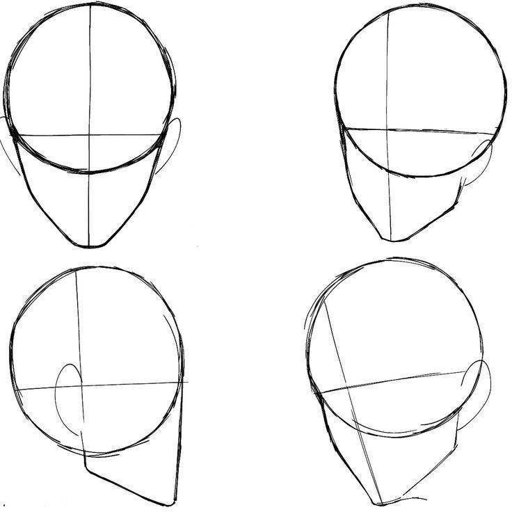
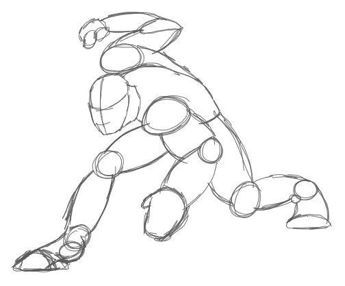
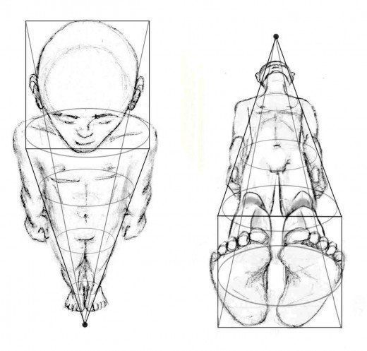

Quá trình học vẽ của tui
Lí do mình biết đến và học vẽ
Từ nhỏ, mình đã luôn muốn thể hiện những thứ mình tưởng tượng trong đầu ra giấy bằng nghệ thuật.Gần 3 tháng trước, khi chuyển về nơi ở mới, mình đã gặp một người bạn và rất ấn tượng với tài năng của cậu ấy. Việc này vừa đủ để thúc giục mình học vẽ, một phần là để có sở thích mới, một phần cũng là để thực hiện ước mơ từ nhỏ của mình.
Lợi ích việc học vẽ đem lại
Biết vẽ giúp mình có nhiều thứ để làm trong thời gian rảnh rỗi thay vì chỉ chơi game hay xem phim. Vẽ giúp mình thư giãn và giảm stress sau những giờ học căng thẳng. Ngoài ra, việc học vẽ cũng giúp mình có thêm kỹ năng sáng tạo và kiên nhẫn, điều này rất hữu ích trong cuộc sống hàng ngày.

Ngoài ra chúng cũng sẽ giúp ích nếu sau này mình làm solo developer hoặc freelancer vì biết vẽ sẽ giúp mình tự thiết kế được các assets cần thiết cho sản phẩm của mình mà không cần phải thuê ngoài, tiết kiệm chi phí và thời gian hơn rất nhiều.
Học vẽ người
Mục tiêu học vẽ của mình lúc đầu luôn là vẽ người. Mình bắt đầu học từ những kiến thức cơ bản nhất như hình khối, tỉ lệ cơ thể, sau đó là các chi tiết như khuôn mặt, tóc, quần áo. Mình thường xuyên luyện tập bằng cách vẽ từ các bức ảnh tham khảo và cố gắng nắm bắt các tư thế và biểu cảm khác nhau. Thành thục được nó khó hơn mình tưởng rất nhiều và mình vẫn đang trong quá trình học hỏi từng ngày.


Phần đầu (head)
Để học vẽ người, mình bắt đầu từ phần đầu (head) vì nó là phần quan trọng nhất để thể hiện biểu cảm và cá tính của nhân vật. Mình học cách vẽ các hình khối cơ bản của đầu, sau đó là các chi tiết như mắt, mũi, miệng và tai. Tuy là thứ đầu tiên phải học nhưng cũng gây cho mình rất nhiều khó khăn. Không sao vì học vẽ là cả một quá trình dài, dài hơn mình tưởng rất nhiều.
Cơ thể người (body)
Tiếp đến là cơ thể người (body). Mình học cách vẽ các hình khối cơ bản của cơ thể, sau đó là các chi tiết như tay, chân. Mình cũng học cách vẽ các tư thế khác nhau để thể hiện chuyển động và cảm xúc của nhân vật. Phần này cũng khá khó vì có nhiều chi tiết và tỉ lệ cần phải chú ý. Tuy nhiên, mình vẫn chưa học anatomy nên vẫn chưa thể vẽ dc một cơ thể hoàn chỉnh.
Các phần như tay, chân và quần áo mình cũng chưa luyện tập kĩ nên vẫn còn khá yếu. Mình sẽ tiếp tục luyện tập và cải thiện kỹ năng vẽ cơ thể người trong thời gian tới.
Perspective
Perspective (phối cảnh) là một khía cạnh quan trọng trong việc vẽ người và các đối tượng khác trong không gian ba chiều. Hiểu và áp dụng các quy tắc phối cảnh giúp tạo ra cảm giác chiều sâu và không gian trong bức vẽ, làm cho nó trở nên sống động và chân thực hơn. Mình đang học cách sử dụng các điểm tụ (vanishing points) và đường chân trời (horizon line) để xác định vị trí và kích thước của các đối tượng trong bức vẽ.
Đây thật sự là một thách thức lớn đối với mình và có thể tốn hàng năm trời để thuần thục , nhưng mình tin rằng với niềm tin và hi vọng, việc nắm vững phối cảnh sẽ thành hiện thực, giúp nâng cao kỹ năng vẽ của mình lên một tầm cao mới.
Tổng kết
Do chỉ mới bắt đầu học vẽ được gần 3 tháng nên mình vẫn còn rất nhiều thứ phải học hỏi và luyện tập. Mình sẽ tiếp tục cố gắng và kiên trì theo đuổi đam mê vẽ của mình, hy vọng một ngày nào đó sẽ có thể vẽ được những bức tranh và OC thật ấn tượng.
Ai mà là artist thì liên hệ và kết bạn face với mình nha, có gì khó mình hỏi học hỏi thêm. Cảm ơn mọi người đã đọc đến đây.